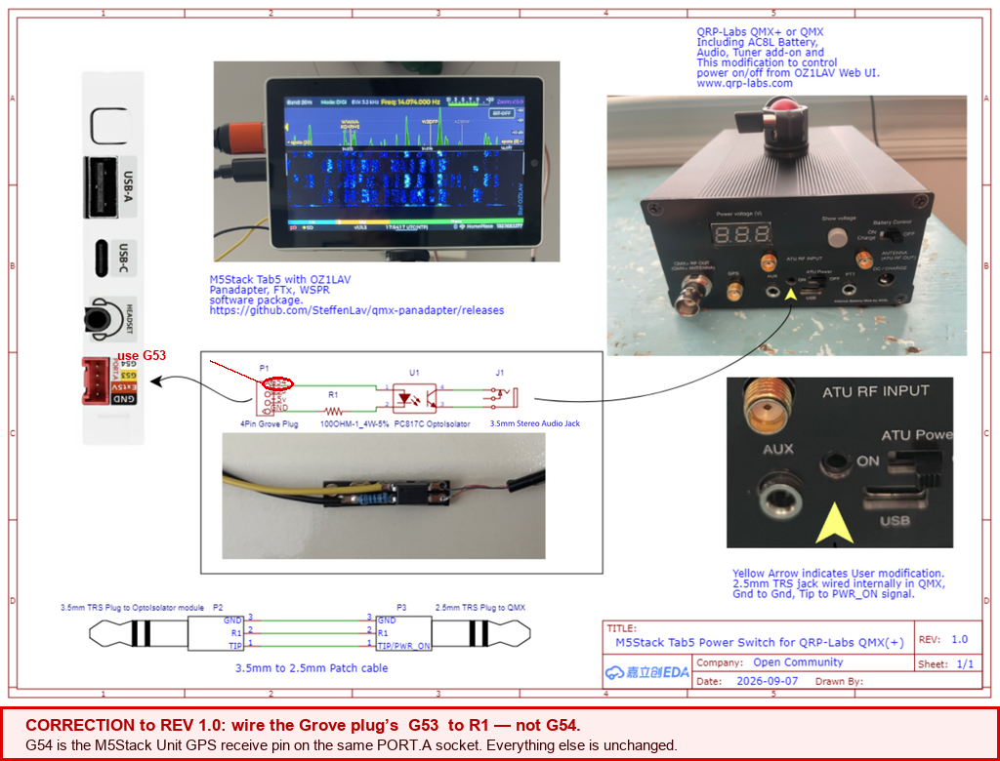

Web UI¶
Access the panadapter remotely from any browser on your WiFi network.
Quick Start¶
- Enable WiFi in the settings drawer
- Open your browser to
http://qmx.local - You'll see the same spectrum and waterfall as the Tab5
No installation, no configuration, and no IP address to write down.
Why a name and not an address. The Tab5 picks its own network - it remembers up to six and moves to whichever is on the air - so its IP address changes without anyone deciding it should, and the only place it is shown is the Tab5's own bottom bar, which is no help when the Tab5 is in the shack and you are not.
qmx.localdoes not change.If
qmx.localdoes not resolve, the IP still works exactly as before - read it off the Tab5's bottom bar. Windows and macOS resolve.localnames out of the box; a few Linux setups needavahi-daemoninstalled, and some guest/hotel networks block the multicast that makes it work.
On a phone¶
The layout is built for a landscape screen and reflows fine there. In portrait on a phone (v1.9.4), the top and bottom bars now scroll sideways if a control doesn't fit — swipe them like the decode list — and the page itself scrolls vertically if the whole layout is taller than the screen. Before this a portrait phone (Randy N4OPI, iPhone Safari) could lose the top and bottom bar controls entirely with no way to reach them.
Remote Control¶
The web UI provides full remote control:
- Frequency — tap the VFO to open the numeric keypad (drag it by its title bar to reposition; toggle between a 10-key and a phone-style digit layout), or click the spectrum to tune (right-drag it to pan instead — see below)
- Mode — buttons for USB, LSB, CW, DiGi
- Bandwidth — selectors for SSB filter width or CW passband
- Band — jump between configured bands
- Memory — recall, edit and clear your 32 saved channels (see Memory channels below)
- Zoom — pinch or scroll to zoom the spectrum
- RIT — click the RIT pill to arm it, then click a caller to receive off your transmit frequency without moving the dial. See RIT
- Park / Restore — appears beside RIT only when there is an offset to stand down, or a parked one to put back. Parking keeps the value; clearing RIT throws it away. The Tab5 does the same thing with a long press on its RIT pill, and both screens share the one parked value
- Tune — put the dial on the signal. In CW it zero-beats the carrier; in USB or LSB it snaps to the far station's own filter edge and onto the grid they are almost certainly on. One press, one move — it never runs by itself, and it cannot transmit. It says how far the dial went, or why it would not move
- Keyer — your CW keyer speed, shown only when the radio is in CW. The speed is sent to the radio and read back, so the figure is what the QMX accepted. 0 is a real setting: it selects Straight Key mode, which is the quick way to key down for a tune-up. This is what you send — the decoded-CW line shows the speed of the station you are hearing, which is a different number
- PWR — transmit power on this band, shown only where that band has been through Calibrate Power. The levels offered are the ones your own sweep measured, so a figure the PA never produced is refused rather than rounded to a neighbour. While a transmission is in progress, or while WSPR owns the PA, the target is stored and the page says so
Everything mirrors the Tab5 display with sub-second latency.
Spectrum Waterfall¶
The waterfall is live-streamed from the Tab5 every ~100 ms. You see the same real-time signal activity as on the device itself.
Click anywhere on the spectrum to tune to that frequency. The waterfall updates continuously — no refresh needed.
Right-drag to pan. Hold the right mouse button on the spectrum or waterfall and drag sideways to move the window along the band. Left-drag still tunes — it puts the dial where you release — so the two gestures do not collide: left moves the radio, right moves the view.
A pan never moves the dial. It moves the window inside what the radio is already receiving, so the frequency stays exactly where it was and the passband marker slides across the screen instead of sitting still. Drag right and you pull the spectrum right with you, bringing lower frequencies into view — the way a map drags. The passband stays visible throughout, in every mode.
It needs the still display to be on, which is the default. With it off the spectrum follows the dial, so there is no separate window to move and the gesture is declined with that reason. The browser's own context menu is suppressed over those two panels so the drag can happen; it still works everywhere else on the page.
The band-plan strip below drags the opposite way, on purpose: there your hand is on the window marker rather than on the picture, so the marker travels with your hand and the frequency rises as you drag right. That one does retune.
Whole-band plan strip. Along the bottom of the view (above the status bar) is a colour-coded CW/Digi/Phone strip spanning the entire current band, mirroring the one on the Tab5. A draggable "visible window" marks the slice currently on screen — drag it, or tap anywhere on the strip, to retune — and a marker shows the VFO position.
Adjustable split. Drag the divider between the spectrum and the waterfall to give either one more room. Your chosen split is remembered in the browser.
In FT8 or FT4 mode the live stream pauses. The browser stops streaming the spectrum/waterfall and shows a notice plus the log and upload controls instead. This is deliberate — while you're operating digital modes the stream would compete with the on-device decoder and the WiFi link, so pausing it keeps FT8 decoding and WiFi noticeably steadier. Switch the Tab5 back to Panadapter mode and the stream resumes automatically.
FT8 Control¶
When the Tab5 is in FT8/FT4 mode, the browser pauses the live spectrum stream (see Spectrum Waterfall above) and instead shows a live TX status banner, a Call CQ button, and the log and upload controls — download your ADIF, upload to QRZ/eQSL/LoTW, grab the diagnostic log. Everything else about operating FT8 (watching the decode list, tapping a station to reply) happens on the Tab5 itself.
Band presets. A dropdown beside the TX tone lists the standard FT8 or FT4 calling frequencies — the same list the Tab5's own Preset button offers, and it switches sub-mode and frequency together, so picking an FT4 frequency puts the Tab5 into FT4. The list follows whichever mode the Tab5 is in.
The status banner mirrors the Tab5's own TX label so you can watch the radio from another room: red while transmitting — including the "call 2 of 4" counter when a CQ stop limit is set — amber when a transmission is armed or a QSO is waiting, green on QSO complete, orange on timeout, and the persistent "CQ stopped after N calls - no answer" once an auto-stopped CQ run ends. The browser tab's title also shows a red dot while transmitting, so even a background tab signals when the radio is on the air.
A finished QSO waits for you. When an exchange completes, the browser shows
<callsign> QSO complete in green and leaves it there until you do
something else — every other message in that line clears itself after twenty
seconds, this one does not. The radio does not wait: it returns to idle and
carries on. The message is a record that the contact finished, kept for whoever
walks back into the room (Randy N4OPI). The Tab5's own label is unchanged; it
is only the browser that has to cope with nobody watching.
Live spots on the browser spectrum¶
The POTA and RBN spots the Tab5 draws on its own trace are now drawn on the browser's spectrum too, from the same store on the device - so the two screens can never disagree about who is on the air.
- Amber is a POTA activation, green an RBN (CW skimmer) spot, and grey a station you have already worked on this band.
- Spots fade with age and are gone at 30 minutes, exactly as on the Tab5.
- Click a callsign to tune to it - frequency and mode (CW, DiGi, or USB/LSB by band). Bandwidth is deliberately left alone: the QMX keeps a filter per mode.
- Counts at the bottom corners -
< spots (3)- say how many more are on this band just outside your window; click one to jump to the nearest. - On a crowded band only so many callsigns fit; unworked and fresher spots keep their labels, and a spot that cannot fit one is not drawn at all rather than left as a line pointing at nothing.
Spots are sent only while the Tab5 is showing the panadapter, and only when they have actually changed, so they cost the WiFi link almost nothing between refreshes.
The decode list, from another room¶
In FT8/FT4 the browser used to show a transmit banner and nothing else - you could see that your radio was transmitting, but not who was answering. The FT8 panel now carries the decode list: callsign, message, country, SNR, DT and DTR, audio tone, distance and bearing, slot (E/O) and age.
DT and DTR are two different quantities, not a repeat. DT is corrected against the band consensus and is character-for-character what the Tab5 prints — the WSJT-X-style number, blank until two separate stations have been heard. DTR is the raw boundary-relative offset and carries about 0.5 s of receive audio latency, so it is not comparable with WSJT-X, but it is the one that moves when a transmitter's timing moves. Hover either heading for the same explanation on the page. (Randy N4OPI, who put the two screens side by side and found them disagreeing under one heading.)
The country column replaced a GRID column, because the grid was already sitting in the message text next to it. The country is the one thing in that row you cannot read off the message, and unlike the Tab5 — where it has to squeeze into three letters — the browser has room to spell it out. Both screens work it out the same way from the callsign, so they cannot disagree. (Randy N4OPI)
The KM and BRG columns arrived in v1.8.3 (asked for by Tony Abbey). They sit after the tone, in the same order the Tab5 uses, and the header reads MI instead of KM if you have Distance in miles ticked. The Tab5 works the distance out and sends it, rather than the browser calculating its own, so the two screens cannot disagree — and where a station has not sent a grid the column shows a dash rather than a made-up number.
It is the same list the Tab5 shows, not a second opinion: the ordering comes from the device (the station you are working first, then anything addressed to you, then CQ calls, then strongest signal) and your Options-window settings are applied to it. The station being worked is highlighted, and anything carrying your own callsign stands out, as on the Tab5.
Click a station to work it (at the operator's own request). The confirm dialog states what will happen, and then the browser runs the same intelligent Transmit a Tab5 row-tap runs: anything that opens an exchange starts the full automatic QSO — whether you are answering a CQ or answering someone who called you — because you are not in front of the radio to click each step. A closing 73 still goes out as a single message. The outcome comes back in plain words under the TX banner - "Armed: ...", "Working X (auto QSO)", or a refusal if the station has aged out of the list, because transmitting at a station that may have left is worse than asking you to click again.
You can pick your next station before the current one has finished. From the moment your closing 73 is armed the exchange is settled, but it is not over for the best part of a minute — long enough for the caller you wanted to drop off the list. Clicking one during that window used to answer "Busy: working X" and discard the choice. It is now held and acted on the moment the machine is free, reported as "Queued: X, after this exchange". The callsign is what is remembered, not the prepared message, so the reply is built fresh from the live decode when it is actually sent. Auto Pounce on the Tab5 itself behaves the same way.
Who is calling you. Below the table, the pileup - stations answering you while you are busy - each clickable with the same confirm. And the grey-list (stations the auto pickers skip after repeated no-answers) is shown with a one-click clear, so "why is it ignoring that station?" is answerable from another room.
Switching the Tab5 back to the panadapter¶
If you left the Tab5 in FT8/FT4 and want the spectrum back, use the Radio menu in the bottom bar — it carries the Panadapter <-> FT8 switch.
Next to Call CQ is TXCQ ANY / EVEN / ODD, which chooses the 15-second slot your CQ transmits in — the same three states as the button on the Tab5, and the same setting underneath, so changing it on either surface is reflected on the other. ANY takes whichever window comes first; EVEN and ODD lock it.
Call CQ from the browser¶
Asked for by Dennis WN4FLA. A CQ run that has timed out, or that has reached its CQ stop limit, otherwise needs a walk back to the Tab5 to start it again. The Call CQ button under the status banner does it from wherever you are.
- It asks first. The button keys the radio, and a mis-click from another room should not put a carrier on the air, so it confirms ("Start calling CQ on the Tab5?") before anything is sent.
- It calls exactly what the Tab5 would. The active CQ preset, the current TX tone (honouring TX Hold, or picking the nearest clear slot as usual) and the TXCQ ANY / EVEN / ODD parity are all the ones set on the device — the two buttons share one code path, so they cannot drift apart. To change any of those, long-press Call CQ on the Tab5.
- It takes about a second. The request is handed to the Tab5's own display task rather than acted on inside the web request, so the button greys out and reads "Calling..." briefly. Watch the status banner, not the button, to see the CQ start.
- Only in FT8/FT4 mode. The button is part of the FT8 panel, and a request that arrives when the Tab5 is not in FT8 is discarded rather than queued — so it can never fire minutes later, unasked, when you next switch modes.
- If your callsign and grid are not set, the Tab5 shows the reason on its own screen and nothing is transmitted.
Not yet confirmed on the air. The endpoint, the hand-off, the preset/tone/parity reuse and the error path are all verified on hardware; the final key-down is inferred from sharing the Tab5 button's code. Please report how it behaves.
Apart from Call CQ, transmit is still initiated on the Tab5 — replies and pounces need the decode list in front of you, and only one interface should be keying the QMX.
Mid-QSO controls¶
While an exchange is running, a Mid-QSO row appears under the FT8 controls:
- Re-send — send the current message again
- RR73 / 73 — jump straight to either
- Pause — skip exactly one transmission and keep the exchange
- Skip — give up on this station and go back to answering
- Cancel — stop transmitting and end the exchange
Skip and Cancel are not the same thing, and the difference is auto-answer. Cancel stops everything, auto-answer included: you are cancelling in order to go and do something else, so the Tab5 does not start calling again a cycle later. Skip means "not this station, carry on" — it ends the exchange and leaves Auto-answer CQ (robot) running, so the next CQ caller is answered as normal.
Two things make it worth having rather than just pressing Cancel and turning the robot back on:
- a station calling CQ DX, or CQ for a state you are not in, was never looking for you, and neither of you wants to spend slots on it;
- a station that keeps calling CQ while you are calling it cannot hear you — which happens to everybody running QRP.
The station you skip is added to the grey-list at once, so the automatic pickers will not call it again. That is deliberate: without it, the robot would answer the same station's very next CQ and you would be back where you started. The grey-list is shown in the decode view and lives in memory only — it is cleared by a reboot, or you can clear it yourself.
Switching to a different caller mid-exchange¶
Double-click another station in the decode list and the Tab5 drops the exchange it is in and calls that one instead. Auto-answer stays on, and the station you dropped is grey-listed so the robot does not go straight back to it.
A single click still refuses while an exchange is running — it says "Busy: working ..." as before. That is deliberate: abandoning a contact in progress is destructive, and one stray click on a busy list should not cost you one. Double-clicking makes it a decision.
Two cases behave differently on purpose:
- Double-clicking the station you are already working does nothing. It is not a re-target, and restarting the exchange you are in is never what was meant.
- If the contact is already finished — your 73 or RR73 is sent and waiting to go out — the pick is queued rather than used to abandon anything. The station is worked; grey-listing them then would be wrong.
If you are calling CQ with nobody answering yet, a double-click simply ends the CQ run and calls that station. Nothing is grey-listed, because there was no partner to give up on.
Randy N4OPI asked for this, 21 October 2026.
Skipping a CQ before you answer it¶
Skip ends an exchange you are already in. The other half of Randy's request is the robot not starting one: FT8 filters → Auto-answer: skip CQs not aimed at me (off by default, on both screens — "Skip CQs not for me" in the Tab5's Options panel).
With it on, while auto-answer is running the Tab5 passes over:
- CQ DX from a station in your own country — you cannot be their DX;
- a US state call (
CQ FL,CQ TX) when you are not in the USA.
It is deliberately cautious, and these are the limits:
- Continent calls are always answered.
CQ EU,CQ NA— deciding those needs a continent for every DXCC entity, which the Tab5 does not carry. - Contest and activity calls are always answered —
CQ POTA,CQ TEST,CQ WW. Anyone may answer those. - A state call is never skipped if you are in the USA, because the Tab5
knows your country, not your state. A Florida station still answers
CQ FL. - Several state codes are also callsign prefixes elsewhere —
OKis Oklahoma and Czechia,CACalifornia and Chile,DEDelaware and Germany. If the code matches your own country as a prefix, the call is answered. - It needs your callsign set. Without it nothing is judged.
A skipped caller is written to the log with the reason, so a station missing from the robot's choices can be explained afterwards rather than guessed at.
!!! note "Skip is in the browser only, for now" The Tab5's own Mid-QSO row is four buttons wide to the pixel, and a fifth needs the row re-measured on the glass rather than re-guessed. Randy asked for the web page, so that is where it is.
Randy N4OPI asked for Skip, 21 October 2026.
Pause is the one to reach for when you want to listen on your own slot: to check the frequency is still clear, or to hear whether the station is really answering you. It shows a pause symbol normally and a play symbol on yellow while a transmission is being skipped, and pressing it again takes the pause back. A slot you skip on purpose never counts against giving up on the contact.
The Tab5's own button does exactly the same thing, so the two screens always agree about whether you are paused.
Randy N4OPI asked for this on the web page specifically — he runs his station from another room and rarely touches the Tab5 itself.
Choosing your TX tone¶
TX tone on the FT8 panel opens the same picker the Tab5 has, against the same live occupancy of the 200-2800 Hz window - it is the device's own map, the one its automatic clear-slot picker uses, so a slot shown busy here is one the device would avoid anyway.
- Green is free, red a station or its guard band, pink the station you are working, white where you will transmit.
- Click a slot to choose it - a mouse can go straight there, where the Tab5 needs a drag. −50 / +50 nudge, and Find a clear slot walks outward to the nearest free one, exactly as the automatic picker does.
- TX Hold keeps the exact tone you picked. With it off, each transmission takes the nearest clear slot, and a CQ that gets clashed moves itself.
- Grey means unknown, not free. If nothing has been decoded yet the device has no picture of the band, and the strip says so rather than showing reassuring green.
- The occupancy picture refreshes itself every 3 seconds while the picker is open (v1.9.4) — it used to be read once, when you opened it, so a slow decision (reading the strip, weighing E vs O) could cross a 15-second slot boundary and land you on a slot that filled in while you were choosing. Your own in-progress pick is never disturbed by the refresh, only the busy/clear colouring under it.
Changing the tone mid-QSO is fine - your partner tracks your time slot, not your audio frequency - but it is refused mid-burst, and the reason is shown rather than the change silently half-applying.
Both time windows, always (asked for by Roy KI0ER). The strip is two rows - EVEN above, ODD below - because two stations only collide if they transmit in the same window, and only you know which window you are about to pounce into. The verdict says where your pick stands: "Clear in EVEN - busy in ODD", or judges just your own window once a transmission has fixed it. The Tab5's own mini strip and picker show the same two rows.
CW Control¶
(v1.25.0) When the Tab5 is on the CW page, the browser shows a CW panel instead of the FT8 one, at parity with the rest of this page:
- "MODE: CW" replaces the Mode pill in the top bar, matching the Tab5's own CW-blue page header, and the Mode pill itself is hidden — same as it already was on FT8/JS8 — since the mode is pinned to CW here and cannot be changed from this page.
- The band-plan strip draws the CW and Digi segments only, stretched to fill the whole strip, exactly as the Tab5's own strip does on this page — see Band discipline. Dragging it, tapping it, or typing a frequency on the keypad all stay inside that range; they cannot land you in the phone portion of the band.
- Spots are CW only — see the note in Live Spots.
- A Station box holds the callsign of the station you are working - the
callsign
{CALL}sends in a macro. Type it and press Enter or Set. No decode is needed, so it works on a signal too weak for the decoder. When the decoder does catch a callsign, a Use ... button appears beside the box and one click takes it. Clear forgets the station. It is the same station the Tab5 shows on its station card: set it on either, and both show it. (Gyula HA3HZ) - Log this contact sits in the same row. It opens the log window with the
callsign already filled in, and with the report copied from the station if
the decoder caught one. Logging the station also clears it, so
{CALL}cannot send the last station's callsign into the next contact. - Six macro buttons send your keyer messages, the same six slots as the
Tab5's own memory buttons, plus a free-text box —
{MYCALL},{PARK},{CALL},{RST}and{SERIAL}all expand here too — to send anything else. Sending is reflected on the Tab5 and keys the radio exactly as a Tab5 tap would. - A type-ahead box (v1.26.0, Ralph DL1HR) sits under the free-text box. Each word is sent when you press Space, and Enter sends the rest, so you can continue to type while the radio keys. A paste sends every complete word. The Tab5 holds the text in a queue of 256 characters and gives the radio the next part only when the radio's own buffer is empty. The line below the box shows what was sent, how many characters the radio still has to key, and how many are queued.
- Stop drops the text that the radio has not been given yet, and says how many characters it dropped. Text the radio already holds, 80 characters at most, is sent to the end: the QMX has no command to stop it.
- CW is not sent outside your band (v1.26.0). Each send passes the band
guard at the moment it is keyed. If the frequency is outside your region's
band plan, or no region is set, the text and the queue are dropped. ⚠ The
Tab5 shows the reason (
CW not sent: ...); the web page does not, and shows the word as sent. See Transmitting outside the band plan. - A pencil icon on each macro button edits that slot's text (a browser prompt, not a full editor yet) and saves straight to the radio's settings — the Tab5's own memory editor shows the change next time you look.
- General ⇄ Contest toggles the active macro set, the same switch as the one at the bottom of the Tab5's own CW panel, and both screens stay in sync with whichever one last changed it.
- Set contest… names the contest you are running — see Contest logging. Once set, the button reads Contest: \<name> instead.
- A WPM readout and keyer speed control, and the decode ticker, were already on the web before this release — this section only covers what is new. See CW for the keyer, macros, band discipline and QSO-ladder concepts this panel is built on; everything there applies here too.
Memory channels¶
The Memory button opens your 32 channels as a grid. Tune recalls one - frequency and mode together - and Edit changes or clears it. An empty slot offers the frequency you are on now, so storing the current VFO is two clicks.
A frequency outside an amateur band is refused, exactly as the Tab5 refuses it: a channel you cannot legally tune is worse than no channel.
Antenna Tune from the browser (QMX 1.04+)¶
With a QMX on firmware 1.04+, an Antenna Tune button appears in the bottom bar. It keys the radio with a steady carrier the moment you click it - there is no confirmation step, because tuning into a load is an ordinary part of operating and the 60-second stop is the real safety net.
While it runs, a panel appears in the middle of the page with the live SWR, the power in watts, and the seconds left before the tune stops itself, plus a STOP Tune button. The panel stays up whatever else you click, so you can keep both hands on an ATU and still read the SWR; the rest of the page carries on working underneath it. The SWR figure is also colour-coded - green below 1.5, amber below 2.5, red above - and the number itself is always shown, so the colour is never the only thing telling you.
The bottom-bar button doubles as the same readout and the same stop, for when the menu happens to be open.
Both ends carry a 60-second safety stop: the device's own timer fires even if the browser tab dies, and the radio's prior mode is restored, never left keyed. Stopping Tune from the QMX's own front panel is honoured too.
Settings, with a real keyboard¶
The Settings button in the bottom bar edits the things you type - which is exactly what the Tab5's touchscreen is worst at:
- Your callsign and grid. Previously reachable from a browser only by downloading the config file, editing it and uploading it back.
- The three CQ messages, which preset is active, and the CQ stop limit.
- The FT8 include/exclude filter terms (both pairs) and the filter toggles.
- Everyday switches: POTA and RBN spots, PSK Reporter, grey-listing, distance units, I/Q balance, band-plan region, and the QMX volume in dB.
- WiFi: add another network from a laptop. The Tab5 remembers up to six, and a Preferred network field (under network name and password) decides which one wins — see below.
- Show RIT button, matching the Tab5 setting — hide the RIT button on the panadapter if you never use it.
- The rest of the radio and display settings, which used to be Tab5-only: CW pitch, IF calibration, SWR protection, the battery charge limit, the 180° screen flip, Fox/Hound mode, simulation mode and the spot mode filter.
-
New in v1.20.3, and the last three that were Tab5-only: the SelfSpotter (spot map) switch under Spots & reporting, and Audio source and Line-in gain under Radio & display. The audio pair is worth a word: the browser had always been able to set them, but the page had no value to show, so there was no control to set them with.
⚠ Audio source behaves differently here than on the Tab5. From the browser the change is stored and takes effect at the next restart; the Tab5's own Audio Settings window restarts for you when you press Save.
⛔ Two switches are deliberately not on this page. The test-tone controls key the radio, and a transmit control belongs nowhere a stray click can reach it; the resource-monitor overlay is a diagnostic, not an operator switch, and has no control on the page (Ctrl+Alt+R toggles it).
Saved straight to the Tab5 - its own settings drawer shows the same values next time you open it.
Preferred network¶
The Tab5 remembers up to six networks. Before this field existed it always took whichever remembered network was loudest, which is the wrong answer on a site with more than one — a DMZ and a house network, say, where the loud one is not the one you want the panadapter on.
Set Preferred network to the SSID you want and the Tab5 takes it over any stronger alternative whenever it is reachable. Leave it empty and nothing changes, so nobody who does not need this is affected.
Both this field and Network name list the networks your Tab5 actually remembers, under the field itself. Only a name from that list will work.
!!! warning "v1.16.3 — the field was there but it did almost nothing"
In v1.16.3 the preference was only consulted after the Tab5 had **failed**
to connect twice. So it worked when your usual network was down, and did
nothing in the case it was written for: both networks up, the usual one
answers immediately, and you wanted the other. It also did not take effect
until the next reboot. If you set it on v1.16.3 and saw no difference, that
is why — and it was not something you did wrong.
**Fixed in v1.16.4**: the preference is read when the Tab5 connects, and
saving it moves the Tab5 straight away *(Randy N4OPI)*.
If the preferred network does not answer, the Tab5 falls back to the strongest remembered one after a few seconds, so an unreachable preference costs you about ten seconds at start-up and nothing else. It is re-tried on every later fallback too, so it wins again the moment it comes back.
Switching to a network the Tab5 already knows needs only the Network name — leave the password blank and the stored one is used. (Up to v1.16.3 a blank password made the Tab5 discard the name silently, which read as the setting not saving. Fixed in v1.16.4.)
The FT8 transmit tone saves properly too, from v1.16.4. Setting tx_tone_hz
on the settings page used to answer Saved and write it down without telling
the radio, so bursts kept going out on the old tone until the next restart. The
tone control on the FT8 page was never affected.
Not carried in a config backup. A restored config does not bring the preferred network with it; set it again on each unit.
Also here: the Display & waterfall group - brightness, waterfall black level, contrast, FFT window, colour map, display sleep, the 180° flip, the dB scale range, spectrum smoothing and spur suppression - the controls you want to tune from a laptop while watching the Tab5's screen. Every change applies live and is stored, exactly as the drawer's own sliders do, and the browser's own spectrum and waterfall follow them as well. Adaptive floor is gone from both the browser and the Tab5 drawer as of v1.8.3 — it could not change anything (see Spectrum & Waterfall), and a control that cannot change anything is worse than a missing one. The auto-answer robot switch is here too, carrying the same permanent warning the Tab5 shows beside it: it transmits unattended - never leave it running unsupervised.
One deliberate omission: your WiFi password is never sent to the browser, so the field is always blank; leave it blank and the stored one is kept.
Help, in the browser¶
The Help ? button in the bottom bar opens the same two doors the Tab5 has, served by the Tab5 itself - so it works with no internet at all, and the text always matches the firmware you are running.
- A list of symptoms and questions in plain words - "My radio is not showing up", "Nothing appears in the decode list", "How do I change what my CQ says?". Pick the one that fits and the manual opens at the section that answers it.
- Rows the Tab5 can see are happening right now are highlighted and moved to the top, exactly as on the device. It ranks; you choose.
- The whole manual, with a Contents list, Back, and links between chapters.
See Getting Help for what the device can detect and why it never navigates for you.
After a firmware update¶
(v1.26.0) A browser can show its own stored copy of the page after the Tab5 has been updated, with the controls of the old firmware. The page now checks this by itself and shows a banner when it is out of date:
- "This page was loaded from firmware X and the Tab5 is now running Y - reload to get the current controls." The Tab5 was updated while the page was open.
- "Your browser showed its own old copy of this page - the Tab5 has newer firmware. Reload to get the current controls." The page was already old when it opened. This check runs a few seconds after the page loads.
Reload the page (F5) when you see either. ⚠ The second check is proven in Chromium browsers only; it is not yet confirmed in Firefox (Gyula HA3HZ).
Bottom Bar Menus¶
The bottom bar groups its actions into four popup menus, plus a battery indicator (e.g. 🔋 87% (8.0V)):
QSO Logs (n) ▲ — only visible when QSOs exist; n is the QSO count:
- ADIF download ↓ — QSO log as an ADIF file (import into WSJT-X, EQSL, etc.)
- Today only, dated file ↓ — just today's contacts, named
qso-YYYY-MM-DD.adi. For anyone who files each day's log separately, the date is already in the filename rather than something to add by hand afterwards (Gyula HA3HZ) - ADIF restore ↑ — merges a previously downloaded (or any logger's) ADIF file back into the log, skipping any contact already there (matched on callsign, date and time). For after an erase-and-reinstall: Config upload never touches the QSO log on purpose, so this is the only way to get worked-station history back (Randy N4OPI). A prompt lets you say whether the restored contacts should be marked as already uploaded to QRZ/eQSL/LoTW (the usual answer is yes, since "restore" almost always means a log that was already sent) or as not-yet-uploaded, so the next upload sends them. From v1.11.3 the first prompt asks whether the file contains corrections. Say yes and a contact already logged with the same callsign, date and time is replaced by the version in the file, instead of being skipped as a duplicate — which is what a merge otherwise has to do, since a correction keeps the very fields it is matched on. This is the way to repair records in another logger and put them back (Gyula HA3HZ: "the corrected file cannot be installed, the previous incorrect version remains"). Corrected contacts are sent to QRZ/eQSL/LoTW again afterwards, because the copy held there is the one carrying the error, and all three ignore a repeat. Callsign, date and time still cannot be changed this way — a contact with a wrong date is a different contact
- ↳ Restore from SD card — the same merge, but read straight off the microSD card the Tab5 already backs up to, with no file to find and nothing to choose. Contacts already logged are skipped, so pressing it twice does nothing. The card mirrors the present, so a deletion that survives a restart is on the card too — which is why the copy from just before the log last got smaller is kept beside it as
qso.prev.adi(download it from Files ▲ -> SD Files and feed it to ADIF restore ↑ if you need it) (Gyula HA3HZ) - QRZ upload ↑ — upload ADIF to QRZ Logbook (requires API key on first use, saved for future sessions)
- ↳ Change QRZ API key — appears once a key is stored, and replaces it. New in v1.8.3: before that the prompt only ever appeared when nothing was stored, so a key typed wrongly or later reissued could not be changed from the page at all (reported by Brian WA6JFK)
- eQSL upload ↑ — upload ADIF to eQSL (requires username/password on first use, saved)
- ↳ Change eQSL login — same, for the eQSL username and password
- LoTW setup / LoTW ↑ — upload ADIF to ARRL's Logbook of The World (see LoTW Upload below)
- Cloudlog upload ↑ — upload to your own Cloudlog or Wavelog. Asks for the server address, your API key and the station profile ID on first use. Plain
http://is accepted for a server on the same network as the Tab5, given as a numeric address such ashttp://192.168.1.20; anything else needshttps://. The check is repeated at every upload, so away from home the upload refuses instead of sending your key across someone else's network. If the server is on your own LAN this is the only upload that needs no internet at all (Mark G4MEM) - ↳ Change Cloudlog server — appears once a server is stored, and replaces the address, key and station profile
- Check log — looks through the log for records that are missing something a programme will want: a callsign, a date that is not in the right form, no station callsign, a reference that does not look like a reference, or — if you say you were activating — no reference of your own. It asks which of those two you mean when you press it. It can only tell you a record is not obviously incomplete: the Tab5 cannot see POTA's or SOTA's rules or their databases, so it never tells you a file will be accepted. Born from "I wish POTA and SOTA had a feature allowing you to test your file for syntax and completeness without submitting it for credit" — two trips to a park to get contacts to test with (Don Adams WB0LQW). The Tab5's own Activation panel shows the same count under the contact total, so you can read it without a laptop.
- View / edit log — opens the QSO log right in the browser (call, mode, band, frequency, date/time, reports, grid — newest first). Click any column header to sort by it (click again to reverse) — sorting by Date groups an activation's QSOs together. Search filters the list as you type, matching any part of a callsign, band, mode, date, grid or reference; several words must all match, so
ea 20mnarrows to Spanish contacts on 20 m. A search that finds nothing says so — "so this one has not been worked" — which is the question worth asking of a log (Gyula HA3HZ). Tick the box on any row and Export selected saves just those contacts as an ADIF file on your computer; the box in the header ticks everything currently shown, so a search and one tick gives you a single day, band or park as its own file. The export carries each record exactly as the Tab5 wrote it, so fields the table does not display are preserved. Each row has a ✕ to delete that one record, and a Delete all button clears the whole log (no undo, so it asks you to typeDELETEto confirm — download the ADIF first if you want a copy). Handy before a POTA activation: start with an empty log and the ADIF at the end is exactly the file you submit. Every field is editable (Gyula HA3HZ) — the two reports, Grid, Their ref, and from v1.12.0 also the callsign, band, mode, frequency, date and time. Which record a logbook matches is a decision for the logbook, not one the Tab5 should make on its behalf. Be aware of what that means: callsign, band, mode, date and time are exactly what QRZ, eQSL and LoTW match a contact on, so changing one of those turns the record into a different contact as far as they are concerned. If the QSO has already been uploaded, the copy the logbook holds is unchanged. Click one and type the corrected value, or leave it empty (for a report, that records that none was exchanged). Their ref is the park or summit the other station was activating: while you are operating, that reference is on the POTA spots page on your phone and in nothing the radio sends you, so you write it down and enter it when you get home (Don Adams WB0LQW). It fills itself in when the contact came from a spot, whether or not you were activating yourself — that is what the ADIFSIG/SIG_INFOfields mean, and a hunter's log should say which park they worked. It is only Park-to-Park when you were in a park too, which is why the column is not called that. An empty cell is not a fault: the reference comes from the POTA spot feed matched on the exact callsign, and not everyone activating in a digital mode registers the activation — some simply start callingCQ POTA— so an unregistered activator produces no reference at all rather than a wrong one (Don Adams WB0LQW). Type it in by hand if you have it. Type the reference alone —US-1241,G/LD-049,DLFF-0123— and the Tab5 works out the programme from its shape and writes bothSIGandSIG_INFO; clear the reference and both go with it. Grid is the other station's locator, correctable because it is the field most likely to be wrong through no fault of yours — a partner's grid arrives once, in their first message, and a marginal contact can complete without it ever being heard cleanly (Gyula HA3HZ, who was correcting them in ADIFMaster). It is checked as a real Maidenhead locator, four or six characters, and refused otherwise: it drives distance and bearing on both screens and goes to three logbooks, so a typo would be a wrong measurement presented as a real one. Clearing it removes the field, which is the honest state when no grid was ever exchanged. Malformed values are refused rather than stored: a date must be eight digits, a time four or six, and a grid a real Maidenhead locator — those fields drive distance, bearing and three logbook uploads, so a typo would become a wrong measurement presented as a real one.
Files ▲:
-
Config download ↓ — all settings as a text file (backup or transfer to another Tab5). It is also the way to change a stored credential by hand: an edited file uploaded back takes effect on the next upload with no restart.
!!! danger "This file contains secrets in clear text" It holds your WiFi password, your QRZ API key, your eQSL password and your LoTW certificate and private key - all readable, none of them obscured. Anyone who has the LoTW key can sign contacts as you.
Treat it exactly like a password list. In particular, **do not attach it to a forum post, a GitHub issue or an email when asking for help** - that has already happened once. If you need to share settings for diagnosis, delete the `wifi_pass`, `qrz_key`, `eqsl_pass`, `lotw_cert` and `lotw_key` lines first; everything else in the file is harmless. The browser asks you to confirm before the download for this reason.- Config upload ↑ — restore settings from a backup file
- SD Files — opens the microSD file browser (
http://<tab5-ip>/files): browse the card from your computer without pulling it — download logs and config backups, upload files, delete
-
Diagnostic download ↓ — downloads both diagnostic logs: the live session log (always on, nothing to enable) and the flash-persisted copy from before the last reboot/power-off
Miscellaneous ▲ also carries Prepare for flashing — closes the USB host cleanly before you unplug the radio or reflash the Tab5, so the QMX is not left half-open.
Radio ▲ — the things that reach the radio itself:
- Switch to Panadapter / CW / FT8 / FT4 / JS8 / WSPR — changes the Tab5’s own screen from the browser. (v1.25.0: CW added to the list.) The Radio menu lists all six pages, so each one is a single click; it no longer steps through them in sequence. Choosing a page is what enables it, and the menu follows the Tab5 if you switch there instead
- Noise reduction and Auto-notch (v1.26.0) — for the audio that the Listen button plays: an on/off box, Low / Med / High, Speech model or Spectral, and the Auto-notch box. They run in the browser and cost the Tab5 nothing. See Web DSP.
- Memory channels — your 32 channels: click one to tune to it, drag one onto another slot to move it, or onto the bin to clear it
- Let me use the QMX menus — stops the Tab5 talking to the QMX so you can use the radio's own menus or its Band Configuration terminal. A bar appears until you hand it back. See Settings
- Antenna Tune — QMX 1.04+ only; keys a steady carrier with live power and SWR, and stops itself after 60 seconds
- Activation — start or stop a POTA/SOTA session from the browser. While one is running a badge appears in the top bar with the reference and the contact count, so it cannot be forgotten on the drive home
- Log a contact — log a CW or SSB contact you worked by hand. Name,
QTH and Remarks are optional and are for what the other operator
told you; they are written to the ADIF log as
NAME,QTHandCOMMENT(24, 24 and 60 bytes - an accented letter counts as two; longer text is cut). On the CW page the window opens with the station you are working already filled in. You type the callsign and the two reports; the frequency, mode, band, date, time, your own callsign and grid and the running activation all come from the radio. The report you send arrives filled in from the mode — 599 for CW, 59 for phone — and from v1.23.0 the S digit of the report you received is measured off the S-meter instead of being a 9 every time (Gyula HA3HZ). Clearing one logs the contact without a report rather than with a wrong one. It stays open after Log, with the callsign cleared and the reports kept, because a run of contacts is not one dialog at a time. It is refused if the radio is not connected, since the record would have no frequency (Gyula HA3HZ, Brian KB9WFS) - Scheduled events — the contest calendar and announced POTA/SOTA activations on one timeline, soonest first, with what is on the air now below what is coming. Filter to Contests or ?OTA when you have already decided which kind of evening it is. The list is fetched at most every 15 minutes; Refresh asks for it now. The source being down is normal — the last list stays up and the age line says how old it is
- GPS status — the fix, position, grid, satellites and the sky plot; the same page the Tab5 shows when you tap the UTC clock.
- Radio menus — the QMX's own 80×24 menu system, in the browser. Arrow keys, Enter and Back on screen, and your real keyboard works too. Needs the radio's second USB serial port switched on first. See Radio Menus
Miscellaneous ▲:
- Tab5 screenshot — current display as PNG, including any open pop-up (band/mode dropdown), not just the base screen
- Reboot the Tab5 — restarts it there and then; receiving stops for about ten seconds. Until now a restart was only offered after a firmware update, which is no use when you are in another room and something is stuck (Randy N4OPI)
- Power off the Tab5 (from v1.20.1) — shuts the unit down from the browser. It does not come back on its own; somebody has to press the button, or cut and restore its power. It asks for confirmation. The radio is put back into receive first, so a transmission in progress cannot be left keyed. Measured to stay off with 5 V still present on the USB-C input. The same control is in the Tab5's own drawer, under Restart, in the Advanced section (Randy N4OPI, whose headless QMX+ runs from 18650s the Tab5 was draining after the radio shut itself off)
- Port mode — chooses what owns PORT.A, the same connector the relay below uses: Relay or Unit GPS v1.1. It sits directly above the relay row because it decides whether that row can do anything. Switching is applied live through the same sequencer the Tab5 drawer uses, so both screens always agree; a refusal comes back as
refused: PORT.A mode not changed: a relay pulse or power cycle is running, or the Unit GPS UART failed to start, and the row snaps back to what the device is actually in. When Unit GPS owns the port the whole relay row greys out with the reason in its tooltip. See Settings ▸ Port mode and Unit GPS Time Source. -
Power-cycle relay — pulses one of two Tab5 GPIO pins (GPIO53 or GPIO54) for a chosen level and duration. Wire an external relay's trigger input to the pin and its contacts to your QMX's PWR_ON/GND signals, and this lets you power-cycle the radio remotely — the piece a remote firmware upgrade otherwise needs someone at the bench for, since the QMX always needs a manual power cycle after a Tab5 flash.
!!! warning "Experimenter feature — you fit the connector yourself" The QMX does not have a PWR_ON/GND jack. Those signals have to be extended from the main board out to a connector you add yourself. Do not go looking for an existing socket, and do not connect them to some other connector that looks plausible (Randy N4OPI). Randy has documented the whole modification, including a schematic — see Power-cycle relay: building the interface below.
Both pins are held as **driven outputs** from boot — they never float. From v1.11.3 they rest on the **inactive side of the active level you have chosen**, so a relay wired to them cannot be closed by the Tab5 booting, crashing or being reflashed. Before v1.11.3 they always rested LOW, which for an active-Low setting meant the relay was held **closed** from power-on until the first pulse released it *(Randy N4OPI)*. Changing the active level re-applies the resting level immediately. !!! warning "Not while Port mode is Unit GPS" The relay and the Unit GPS v1.1 are **the same two pins**, so only one of them can be plugged in. With Port mode on **Unit GPS** the row above is greyed, `gpio_pulse` and `gpio_power_cycle` answer `PORT.A is in Unit GPS mode`, and nothing is driven — including the pins resting. Switch back to **Relay** first (and unplug the GPS). See [Port mode](settings.md#port-mode-porta).- Keyboard shortcuts — assign what the Tab5's snap-on keyboard does (see below)
- Reset settings — clear stored settings back to defaults (see Troubleshooting)
- Reset WiFi — clear just the WiFi/network state
Power-cycle relay: building the interface¶
Designed, built and documented by Randy N4OPI, and published here with his permission. The Tab5 side of this — the pin, the level and the pulse length — is all the firmware does; everything below is the hardware that turns a pulse into a QMX that switches itself on.
Why bother. A Tab5 firmware upgrade is a warm reset, and a warm reset with the radio attached always leaves the QMX needing a manual power cycle. That one step is what otherwise keeps a remote station from being upgradeable from another room — or another country.
!!! warning "Use G53, not G54 — the drawing below is REV 1.0, corrected"
The schematic reproduced here is Randy's REV 1.0 (2026-09-07) and draws
the Grove plug's G54 going to R1. Wire it to G53 instead. The
copy below is marked up with that correction — the ring on the P1 pin and
the red band along the bottom are added here, not part of his drawing.
`G54` is the same pin the **M5Stack Unit GPS v1.1** receives on, and both
are on PORT.A — the one 4-pin socket. A relay interface on `G54` therefore
sits across the GPS's transmitter, and there is no setting that gets you
out of it: "Relay: drive only the selected pin" protects the pin you did
**not** select. See
[Settings ▸ Sharing PORT.A](settings.md#port-mode-porta).
Nothing else in the drawing changes — same two components, same jack, same
patch lead. Randy has issued a revised drawing; look in the
[QRPLabs groups.io **Files** area](https://groups.io/g/QRPLabs/files) for
his current version, which will carry the change in the artwork itself.

Parts¶
| Ref | Part | Notes |
|---|---|---|
| P1 | 4-pin Grove plug (HY2.0-4P) | Into the Tab5's side EXT socket. Its four pins are EXT 5V, G53, G54, GND |
| R1 | 100 Ω, ¼ W, 5 % | In series with the optoisolator's LED |
| U1 | PC817C optoisolator | Keeps the Tab5 and the radio electrically apart — the reason this is safe |
| J1 | 3.5 mm stereo audio jack | The output side, mounted on the module — not the jack that goes in the radio |
| — | 3.5 mm to 2.5 mm TRS patch cable | Joins the module's 3.5 mm jack to the 2.5 mm jack in the radio. Tip to tip, sleeve to sleeve |
Wiring¶
- In the radio. Fit a 2.5 mm TRS jack somewhere accessible on the case
and wire it internally: tip to
PWR_ON, sleeve toGND. This is the only irreversible part of the job, and the only part that involves opening the QMX. Randy brought his out on the rear panel beside the ATU RF input. - The interface.
G53goes through R1 into the PC817C's LED, with the Grove plug'sGNDcompleting that side. (G54works electrically and the firmware will pulse it, but it is the Unit GPS's receive pin on the same socket — useG53unless you are certain no GPS will ever be fitted.) The PC817C's phototransistor goes across J1, the module's 3.5 mm jack, tip and sleeve, so a pulse from the Tab5 briefly connectsPWR_ONtoGND. The phototransistor side is polarity-sensitive — follow the schematic, and note that theEXT 5Vpin is not used at all. - Assembly. In Randy's words: "I built it onto a small chunk of breadboard, but with just 2 components it could just as easily be connected point to point and sealed up inside a piece of heatshrink tubing. Make sure you insulate your wires so the heatshrink doesn't squeeze them together and create a short."
Settings that work¶
In Miscellaneous ▸ Power-cycle relay: the pin you actually wired (G53), active level High, and 2000 ms — "I've found 2000ms to be sufficient". The firmware's own default is 1000 ms, so this is one to set and save; it is remembered from v1.10.9 on.
If a Unit GPS shares the socket, also tick Relay: drive only the selected
pin (v1.20.2) so relay mode stops holding G54 as a driven output against
the GPS's transmitter.
!!! note "Why the bottom-edge Dupont pins are not offered"
A neater cable run would leave the Tab5's bottom edge rather than the side,
and Randy asked about exposing G0, G1, G49 and G50 for it — then
talked himself out of it in the same message: "The Dupont connector isn't
keyed, so a person could make a disastrous mistake if they are also trying
to power the Tab5 using the 12V IN pin."
There is a second reason he could not have known: **`G0` and `G1` are the
I2C bus for the snap-on keyboard**, so a relay pulse there would fight a
keyboard on any Tab5 that has one. `G53` and `G54` are on a keyed connector
and are held as driven outputs from boot, which is what makes them safe to
hand to people — so those two are the only pins the firmware will pulse.
Keyboard shortcuts¶
Miscellaneous ▸ Keyboard shortcuts assigns what the Tab5's snap-on keyboard does. Each row is a modifier, a key and an action; Add shortcut makes a new one, Remove deletes it, and Restore defaults puts back the nine the firmware ships with.
There are 25 actions — opening any of the setup windows, the manual, the log, the radio menus, plus zoom in and out, brighter and dimmer, flat spectrum, and releasing the radio to its own front panel. Alt is left completely unused by the defaults, so it is free for your own bindings.
The editor is here rather than on the Tab5 for a simple reason: assigning shortcuts is a setup job done once, and doing it on the Tab5 would mean typing on the very keyboard you are configuring.
!!! note "Nothing that transmits can be bound" A button you deliberately press is one thing; a two-key combination that a slipped finger can produce is another.
Tab5Shot - what the screen looks like right now¶
Tab5 screenshot in the Miscellaneous menu opens a live /ss.bmp capture of the Tab5's
screen in a new tab, and (save PNG) beside it saves one as a file. It is the quickest way to put what you are seeing into a
bug report or a message to the group, without a camera and without reaching for
the device.
!!! note "It stops animations while it reads" The capture comes from the live framebuffer, so the waterfall pauses for the moment it takes. Nothing else is affected.
Config backup, restore and edit¶
Config download ↓ and Config upload ↑ in the Files menu save every setting to a plain text file, so you can edit it on a PC, put it back, or share part of it.
Config down downloads qmx-config.txt, an INI-style file grouped into
sections:
| Section | What is in it |
|---|---|
[settings] |
Callsign, grid, WiFi SSID and password, CW pitch, IF trim, I/Q balance, flat spectrum, zoom, colour map, brightness, dB range, EMA, GPS toggle, keypad layout, QRZ key, eQSL user and password |
[cq] |
The three FT8 CQ-message presets, and which one is active |
[ft8_filters] |
The CQ-run include/exclude filter terms and toggles |
[memories] |
The 32 memory channels, one per line: slot = freq_hz, mode, label |
Config up picks an edited file and merges it back. Only the keys and sections actually present in the file change; everything else is left alone, and unknown keys are ignored, so a file from a newer firmware still loads. Memory channels apply at once, other settings after a restart.
!!! danger "The file contains your passwords in clear text" It holds your WiFi password and your QRZ and eQSL credentials unencrypted, because it is meant to work as a complete backup. Keep it private, and strip those lines before sending the file to anyone.
Three things it is good for:
- Back up before a clean flash. Config down, erase and flash, Config up - seconds instead of re-typing everything on glass.
- Edit with a real keyboard. Faster for callsign, grid, CQ messages, or entering a batch of memory channels.
- Share a band plan. Copy just the
[memories]section into a message; another operator pastes it into their own file and uploads it, and their other settings are untouched.
LoTW Upload¶
Uploading to ARRL's Logbook of The World requires an existing LoTW account and a callsign certificate (made with ARRL's TQSL program).
One-time setup: open the QSO Logs menu -> LoTW setup. A guided two-page window walks you through it:
- Page 1 explains how to export your callsign certificate from the TQSL program on your PC (Callsign Certificate -> Save the Callsign Certificate, which produces a
.p12file), with a button that opens ARRL's own instructions. - Page 2 imports the
.p12file, its passphrase, and your DXCC entity (plus optional CQ/ITU zones, and US state and county — see below). The.p12is parsed in the browser — the passphrase never reaches the device.
After setup the button reads LoTW ↑. Each click signs all not-yet-uploaded QSOs on the device with your certificate and uploads them to lotw.arrl.org.
US stations: fill in state and county. These were not being sent at all before, which meant US operators' uploaded QSOs earned no Worked All States and no county credit — for them or for the stations they worked. Fill them in if your TQSL station location has them. The county is the name on its own (Arlington), not VA,Arlington. Operators outside the US can leave both blank.
Certificate renewal — LoTW certificates expire roughly every 3 years. Use the ↳ Change LoTW certificate row beneath the upload button to re-run setup (Ctrl-click on LoTW ↑ still works, and was the only way in before v1.10.5). From v1.3.3, re-submitting the same certificate no longer re-uploads your whole log — only an actually-changed certificate resets the upload position, because a new key means every QSO has to be re-signed. So you can go back in to add a state and county without resending everything.
What the result tells you. From v1.10.5 the message shown after an upload is LoTW's own reply, not just our count. That matters: LoTW accepts a file and processes the contacts in it afterwards, so a figure like "22 uploaded" only ever described what was sent. If contacts are being rejected, the server's own words are what say why.
If an upload does not appear on LoTW, check ARRL's queue status before assuming a fault — the queue has run hours behind at busy times. LoTW rejects a malformed file at upload time, so anything that reached the queue was signed correctly.
Upload Behaviour¶
Uploads work while FT8 or FT4 is actively running — the panadapter briefly pauses the FFT and SD-archive activity during the HTTPS transfer, then resumes automatically. A result is shown once the upload completes, reporting how many QSOs were sent.
Each upload remembers where it left off — re-uploading skips QSOs that were already sent in a previous session.
Network Requirements¶
- WiFi must be on (settings drawer)
- IP address shown in settings (or static IP if you prefer)
- Both Tab5 and browser on the same LAN (no internet needed)
qmx.localresolves on most networks; guest/hotel WiFi often blocks the multicast it needs, in which case use the IP- 5 GHz WiFi works but 2.4 GHz is recommended (longer range)
Limitations¶
- One browser at a time — the Tab5 streams the spectrum to a single browser. Open a second one (or a phone, or another tab) and it takes over; the first says "another browser took the live view — click to take it back" and stops, rather than the two fighting over it. Click that message to reclaim it.
- Clock sync — the time-sync window is still on the Tab5 only
- Real-time chat — no operator messaging
- Export formats — ADIF only (import to EQSL, WSJT-X, etc. yourself)
- Latency — ~200 ms typical (WiFi dependent)
- Stale connection recovery — if the browser's network drops without a clean disconnect (e.g., putting a laptop to sleep), the web view may freeze briefly before recovering. Recovery is automatic and capped at ~5 seconds.